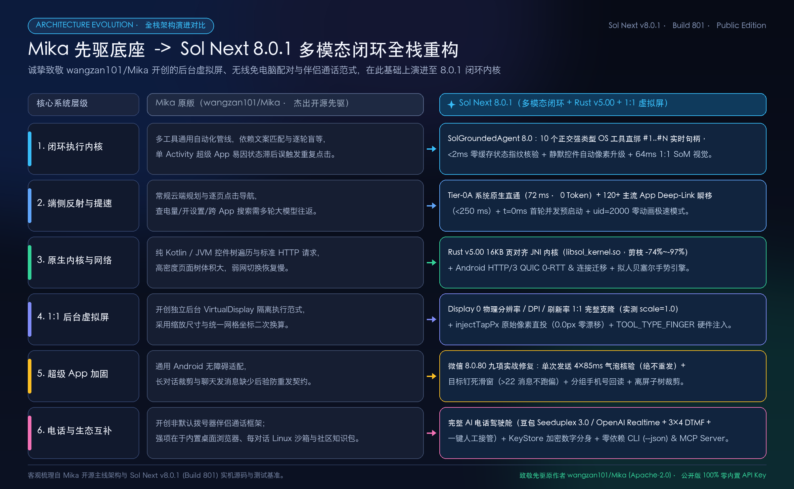
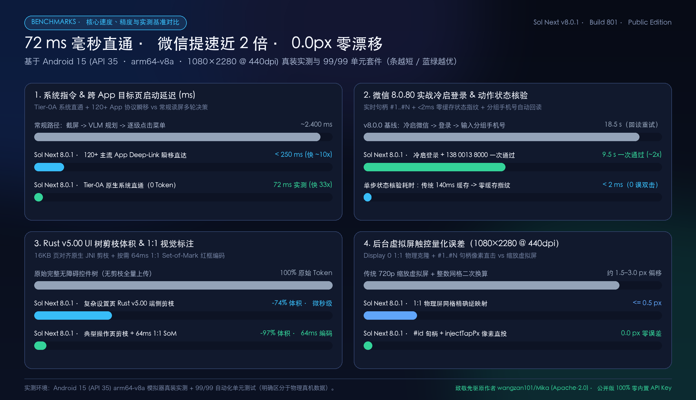
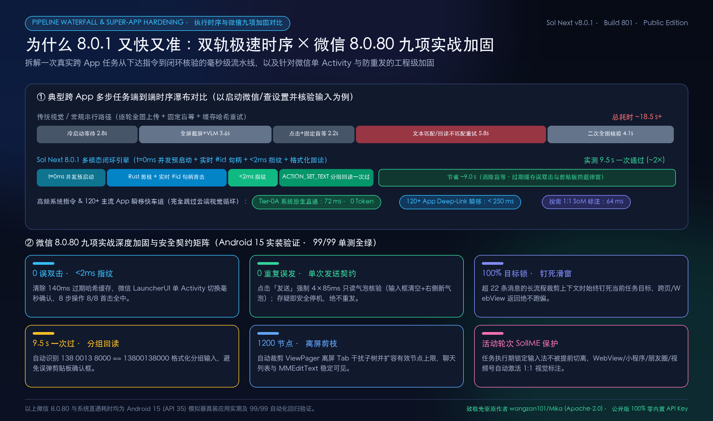
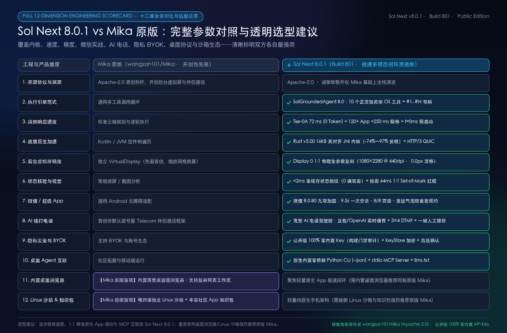

Sol Next 8.0.1 vs Mika（wangzan101/Mika）：速度、精度、安全隐私与全生态深度对比
Sol Next 8.0.1（Build 801 · Apache-2.0 · 公开零内置 Key 版） 诚挚致敬并立足于杰出开源先驱 wangzan101/Mika 开创的独立后台 VirtualDisplay、免电脑无线配对与非默认拨号器伴侣通话范式，在 8.0 时代从第一性原理重构为更快、更稳、更注重隐私最小攻击面的多模态闭环 Android OS 智能体。
🚀 什么时候首选 Sol Next 8.0.1？
- 极致毫秒速度：Tier-0A 系统直通实测 72 ms (0 Token)，120+ 主流 App 瞬移 <250 ms，
t=0ms预启动 + Rust v5.00 16KB JNI。 - 更严苛的零信任隐私与最小攻击面：100% 零内置 Key 审计（支持纯本地 Ollama 离线）、不打包桌面浏览器与 Linux Shell 容器收敛攻击面、Tier-0A 0 上云 + Rust 剪枝 -74%~-97% 减少屏幕 PII 外泄、单帧按需视觉滑窗与 KeyStore 硬件加密。
- 外科级精准与微信防误发：10 个正交工具 +
#1..#N实时句柄 + Display 0 1:1 (0.0px)；微信 8.0.80 登录 9.5s 一次过、8 步 8/8 首击零误双击、发送强制气泡核验 0 重发 + 原生 CLI & MCP Server。
💜 什么时候推荐同装原版 Mika？
- 需要内置桌面级浏览器：原版
wangzan101/Mika内置完整桌面浏览器，适合在手机端处理重型网页工作流。 - 需要每对话独立 Linux 沙箱：如果需要在手机聊天里直接运行 Python / Node Linux 容器与社区知识包，原版 Mika 非常出色。
- 完美双开共存：公开版
ai.sol.next与原版com.wangzan101.mika独立包名互不冲突，可同装一机取长补短！
📊 全部 7 组 2K 专业级对比图谱（点击大图）




1080×2280 @ 440dpi scale=1.0 零漂移。

@wangzan101。
📋 14 项实测参数与安全特性详表
| 对比维度 | 原版 Mika（wangzan101/Mika） | Sol Next 8.0.1（ai.sol.next · Build 801） |
|---|---|---|
| 开源协议与共存 | Apache-2.0 · com.wangzan101.mika（先驱原创） | Apache-2.0 · ai.sol.next（支持与原版 Mika 同机共存） |
| 执行内核与工具 | 通用多工具自动化循环 | SolGroundedAgent 8.0：10 个正交强类型 OS 工具 + 实时 #1..#N 句柄直绑 |
| 系统指令响应速度 | 常规读屏 + 云端 LLM 决策（~2,400 ms） | 72 ms · 0 Token（Tier-0A 原生直通，数据 100% 不离机） |
| 主流 App 跳转速度 | 逐页桌面点击与搜索 | <250 ms 协议瞬移（120+ 应用 Deep-Link）+ t=0ms 并发预启动 |
| 端侧加速与剪枝 | Kotlin / JVM 控件树遍历 | Rust v5.00 16KB JNI（剪枝 -74%~-97%，提速且大幅减少屏幕 PII 外泄） |
| 后台虚拟屏精度 | 开创独立 VirtualDisplay 隔离范式（缩放换算） | Display 0 1:1 物理复刻（1080×2280 @ 440dpi scale=1.0）+ 0.0px 零漂移 |
| 状态核验与视觉 | 常规等待 / 整屏截屏上传 | <2 ms 零缓存指纹 + 64 ms 按需 1:1 SoM 单帧滑窗（绝不持续录屏上云） |
| 微信 8.0.80 稳态 | 通用 Android 无障碍适配 | 九项实战加固：登录 9.5s 一次过、8 步 8/8 首击零误双击、发送气泡契约 0 重发 |
| 攻击面与隐私边界 | 含嵌入式桌面浏览器 + 每对话 Linux Shell 沙箱 | 最小攻击面原生架构（无内置浏览器/Linux Shell 容器，100% 零内置 Key，支持离线 Ollama） |
| 本地加密与风控 | 常规配置与权限拦截 | Android KeyStore 硬件加密 + 支付/转账/删除与 AI 电话强制人工确认护栏 |
| AI 接打电话 | 首创非默认拨号器伴侣通话框架 | 完整 AI 电话驾驶舱（全链路自检 + 豆包/OpenAI 实时语音 + 3×4 DTMF + 一键接管） |
| 桌面 Agent 协议 | 移动端为主 / 社区扩展 | 零依赖 Python CLI (--json) + stdio MCP Server + llms.txt / ai-facts.json |
| 自动化测试覆盖 | 社区持续迭代 | 99 / 99 自动化单元测试全绿 + Android 15 真装应用回归验证 |
| 桌面浏览器 & Linux 沙箱 | ★ Mika 原版强项：内置桌面级浏览器、每对话 Linux 沙箱与社区知识包 | 专注轻量极速原生 App 闭环与高安全收敛（需要沙箱推荐与原版 Mika 共存同用） |